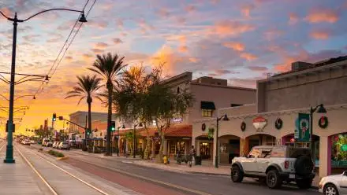
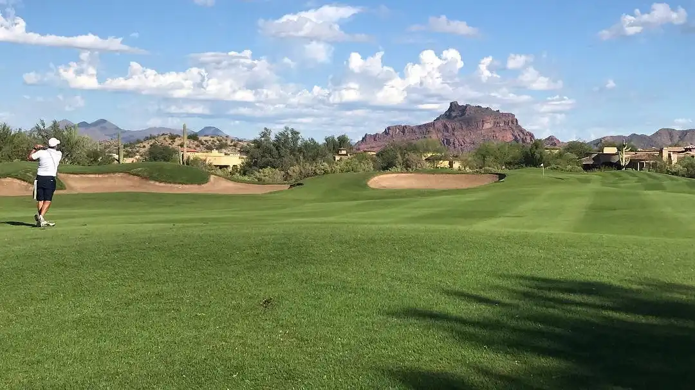
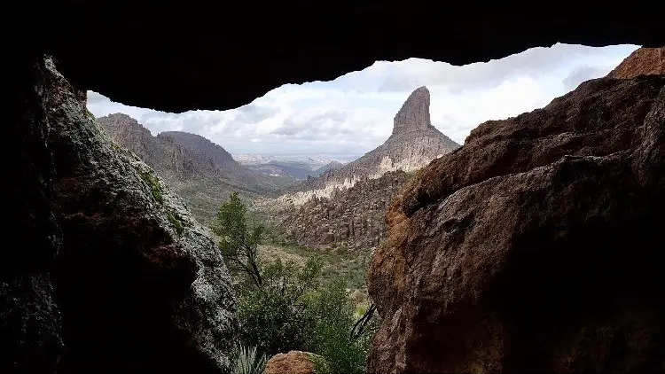
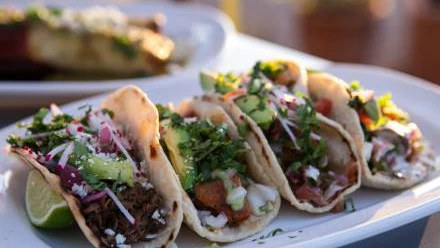
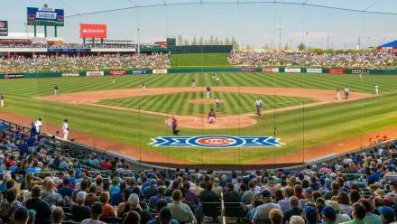

Visit our downtown area for shopping, dining, and more!

Tee off on our award-winning greens.

Enjoy a day exploring our famous Superstition MountainsCareer opportunies abound in Mesa.

Treat yourself to second-to-none fare.

Come to a game at Sloan Park.